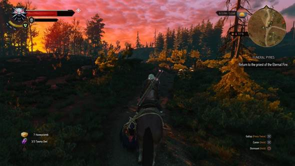
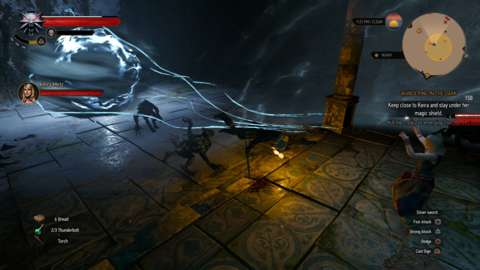
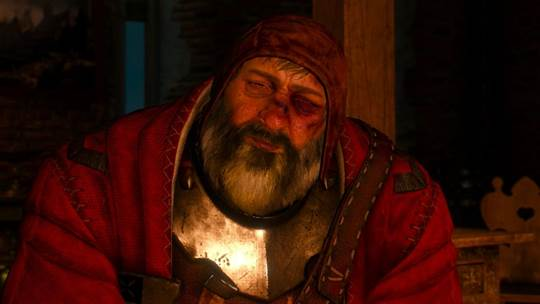
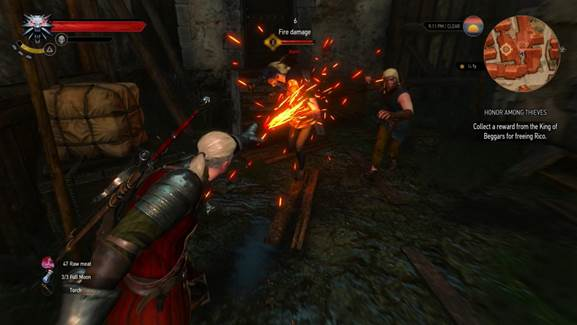
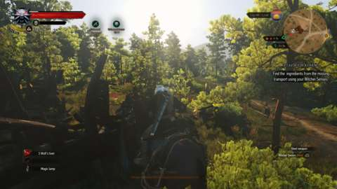
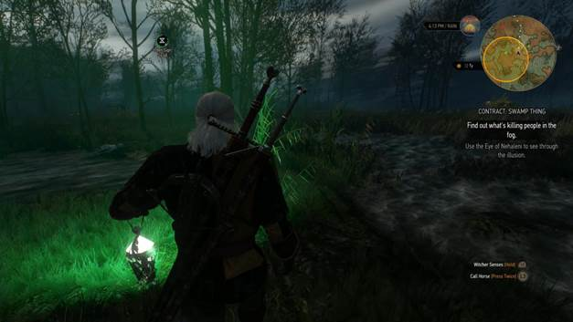
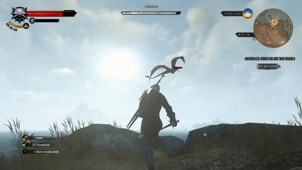

In The Witcher 3: Wild Hunt, the sacred is always at war with the profane, and beauty is always at war with blood. The series has always contrasted its world's physical glamor with its intrinsic violence, but never has that contrast been this uneasy, this convulsive. That The Witcher 3 depicts the immediate brutality of battle in great detail is not a surprise; many games fill the screen with decapitated heads and gory entrails. It's the way this incredible adventure portrays the personal tragedies and underhanded opportunities that such battles provide that makes it so extraordinary.
It is more than its thematic turbulence that makes The Witcher 3 extraordinary, actually. Excellence abounds at every turn in this open-world role-playing game: excellent exploration, excellent creature design, excellent combat mechanics, excellent character progression. But the moments that linger are those that reveal the deep ache in the world's inhabitants. In one quest, you reunite two lovers, one of which is now a rotting hag, its tongue lasciviously lolling from its mouth. In another, a corpulent spouse-abuser must find a way to love two different lost souls, each of which test the limits of his affection. Don't worry that these vague descriptions spoil important events: they are simple examples of the obstacles every resident faces. On the isles of Skellige and in the city of Novigrad, there is no joy without parallel sorrow. Every triumph demands a sacrifice.

Every horse Geralt has owned is called Roach. Talk about an identity crisis.
As returning protagonist Geralt of Rivia, you, too, face the anguish of mere existence, sometimes in unexpected, unscripted ways. The central story, which sees you seeking your ward and daughter figure Ciri, as well as contending with the otherworldly force known as the wild hunt, often forces this anguish upon you. But it was my natural exploration of the game's vast expanses that proved most affecting. At one point, I witnessed a woman sentenced to death, doomed to starve after being chained to a rock. It's a chilling sentence, of course, but it was only later, when I accidentally sailed past the tiny island where her corpse still rested, that the horror of her punishment sunk into my heart. The Witcher 3's story did not script this moment; it was merely a passing detail that might have been lost in the waves or overlooked in favor of the harpies circling overhead. Yet there she was, a reminder that my actions--actions that felt righteous and reasonable as I made them--allowed this woman to rot in this faraway place.
The Witcher 2: Assassins of Kings touched on similar repercussions, but The Witcher 3 makes them personal. Political tensions run as hot as they always have in this series, and your decisions still divert the paths of barons and kings in intriguing ways. But where The Witcher 2's focus on plot came at the expense of characterization, the sequel gives the wartime struggle great heft by giving Geralt intimate connections to every major player. The connection between Ciri and Geralt proves to be the story's strongest driving force, but Ciri is not a damsel to be rescued, though it may seem so at first, especially in this particular world. This is a place where women struggle to find respect as political candidates, as armorsmithing masters, and even as proper members of a functioning culture.
Roasting a crowd of witch hunters is not only satisfying on its own terms, but has a sweet justice to it: the first steps you make in the city of Novigrad lead you to a witch-burning in progress.

You can always count on a sorceress to get the job done when you're in the middle of a somersault.
Women, as it happens, are also this story's strongest force. If you have played a Witcher game before, you know many of them already. The most powerful of them are former members of the Lodge of Sorceresses, few of them outright likable, and each of them defiant in the face of death. In certain circumstances, you take control of Ciri herself, and she wields swords just as capably as a witcher does. (Her phantom dashes also bring a zippiness to her sections that Geralt lacks.) The occasional dose of gratuitous toplessness sometimes proves to be a needle scratch, particularly in a sauna scene that seems to have been constructed specifically to get you up close and personal with a woman's anatomy. In other moments, however, the nudity is a natural element of a scene's sensuality, such as the tutorial scene that features Yennefer and Geralt sharing a relaxed intimacy that surpasses the obvious physical connection.
The Witcher 3 is enormous in scope, though "big" is just a descriptor, a statement of neither good nor bad. It is fortunate, then, that The Witcher 3 does not subscribe to the "make a big world and fill it with copy-paste content" design philosophy. Instead, it finds a nigh-perfect sense of balance between giving you things to do and allowing its spaces to breathe. You follow a path not just because there's a question mark on your map, but also because it must lead somewhere new and interesting. The intrigue builds naturally: Every quest is a story of sadness or triumph waiting to absorb you, asking you to make decisions that change the landscape in various ways. You won't always know what the consequences are; some decisions have noticeable, game-altering repercussions, while others barely draw your gaze. But the consequences are there, and you often notice them, even though the game doesn't go out of its way to call attention to them.

The Bloody Baron shows intriguing personal growth over the course of his story. No relation to the ghost at Hogwarts of the same name.
Of course, story quests, side quests, and monster-killing contracts typically involve the same set of activities: killing, talking, and activating your witcher senses, which reveal footprints and scent trails and turn Geralt into a particularly violent private investigator. It is the details that keep every task as inviting as the one that came before. It might be a change of scenery that turns an otherwise typical contract into a clash for the ages: you pull out your crossbow and shoot a screaming wyvern out of the sky with a well-placed bolt, then plunge your silver sword into its heart, all while a fire rages in the outpost beyond and lightning bolts tear across the dark sky. It might be fear that disrupts your state of mind: you search for spirits as you trudge through a murky swamp, lighting the mist with the green light that emanates from your magical lantern. The Witcher 3 makes grand gestures and small ones, too; you may battle werewolves and match wits with kings and barons, but hearing an angel-voiced trobairitz sing a plaintive ballad is a stunning show-stopper.
The writing can be best described as "lusty." Many of the land's inhabitants serve a god, but their gods have no apparent problem with them making murderous accusations and shouting obscenities. It's fitting that these people would turn to the gods yet curse them in turn, given fields ravaged by battle and littered with bloated corpses. There are a few moments that reveal the screenplay's seams: some of Geralt's lines may not make sense if you choose them in a particular order, for instance, and Geralt is concerned only with money and prefers to stay out of politics, except for when he's not like that at all, because the plot demands as much. But at least the witcher's signature dry growl remains intact, and the rambunctious Irish and Scottish accents that pervade particular regions may inspire you to head to the pub and grab a pint.

Burn, bandits, burn!
As cutting as some characters' wit may be (Sigismund Dijkstra's sarcastic barbs make him one of the game's foul-mouthed delights), you do most of your cutting with the blades sheathed on your back. The Witcher 2's combat was overly demanding at the outset, but The Witcher 3 is substantially easier; I recommend, in fact, that you choose a difficulty level one notch higher than the one you would typically choose, presuming you don't default to the most stringent one straight away. Even when things get easy, however, the combat is always satisfying, due to the crunchiness of landing blows, the howls of human foes scorched by your Igni sign, and the fearsome behavior of necrophages, wandering ghosts, and beasts of the indescribable sort. It's easy to get sidetracked and outlevel story quests, but even lesser beasts require a bit of finesse; drowners attack in numbers, for instance, knocking you about and making it difficult to swing, while winged beasts swoop in for a smackdown and require you to blast them down with a flash of fire, a shockwave, or a crossbow bolt.
The familiar magical signs return in The Witcher 3. Geralt is no mage, but he still calls on the powers of magic to assist him in combat. Character advancement is substantially improved over the previous games, providing not just passive improvements to your magical trap and your force-push technique, but also altering their very behavior. Casting Igni, for instance, initially produces a brief flash of flames. Certain upgrades, however, allow you to spray a stream of flames for as long as your energy supply supports it. Roasting a crowd of witch hunters in this way is not only satisfying on its own terms, but has a sweet justice to it: the first steps you make in the city of Novigrad lead you to a witch-burning in progress. How appropriate that you turn this punishment on the same factions that would rid the world of sorceresses and their cohorts.
The Witcher 3 finds a nigh-perfect sense of balance between giving you things to do and allowing its spaces to breathe.

Loot has a huge role to play in the game, thanks to the high degree of armor and weapon customization. Different armor sets in particular are a joy to uncover, making Geralt look more and more hardened as you progress. In many role-playing games, hunting for treasure is more of a chore to be marked off of the to-do list than a pressing adventure of its own. In The Witcher 3, discovering a diagram of new and improved chest armor is a cause for celebration. Geralt can get a shave and a haircut (and delightfully, his beard grows back over time), but otherwise, you cannot customize his physical appearance; new armor means a new look, and with it, a new visual attitude. Geralt's look evolves from that of a battered soldier, to robed battle wizard, to wisened commander, all on the basis of the game's exquisite armor designs.
The Witcher 3 also benefits from its hugely expanded potions system, which allows you to quaff potions during combat--though as always, witcher potions are dangerous, and Geralt can only have so many in effect due to their rising toxicity. Between gear diagrams and potion ingredients, I became a digital hoarder, a trap I typically avoid in role-playing games. Again, it comes down to balance: your inventory fills rapidly, but for the most part, this is not just "stuff" for the sake of "stuff." I knew that the ingredients I collected would allow me to create a potion that in turn let me dive for treasure without being annoyed by pesky sea-dwelling drowners. I knew that I could break down those horse hides I collected into armor components the local smith needed to make me look even mightier.

In Velen, the wind blows particularly violently.
From one hour to the next, the compulsion to examine the landscape grows. Some of the joys that arise in the wilds are quiet ones: you mount your horse Roach and trot over the hill in time to see a rich sunset, always a treat in The Witcher 3, whose saturated reds and oranges make the sky look as beautiful and as blood-sodden as the meadows beneath them. You discover a boat and embark on an impromptu voyage through the islands of Skellige, taking note of the ship wreckage that mars the beaches and cliffs. The music swells, and a soprano intones a euphoric melody that accentuates the peacefulness. The peacefulness is always broken, however--perhaps by a journey into a dark dungeon where your torch lights the pockmarked walls and a snarling fiend waits to devour you, or by the shout of a boy crying out for your assistance.
The Witcher 3: Wild Hunt is undoubtedly beautiful regardless of platform, though prone to occasional bugs and visual glitches. Solving a quest's subtasks in a particular order caused the game to stick at a perpetual loading screen. Roach decided to stop galloping and lurch ahead in a weird way for minutes on end until I quick-traveled away and returned. Geralt's hair blew in the wind, even when he was indoors. It's jarring should you enter an area after quick-traveling and the citizens have yet to pop in, including quest-givers. Along with occasional console frame rate jitters, these elements may prove distracting to you should they arise, depending on your level of tolerance; even so, Geralt's newest adventure is such an achievement that I was rarely disturbed by the glitches I encountered.

Silence, creature of the sky! I am here to slaughter you!
These distractions stand out in part because The Witcher 3: Wild Hunt is otherwise incredible and sumptuous; the little quirks are pronounced when they are surrounded by stellar details. And make no mistake: this is one of the best role-playing games ever crafted, a titan among giants and the standard-setter for all such games going forward. Where the Witcher 2 sputtered to a halt, The Witcher 3 is always in a crescendo, crafting battle scenarios that constantly one-up the last, until you reach the explosive finale and recover in the glow of the game's quiet denouement. But while the grand clashes are captivating, it is the moments between conflicts, when you drink with the local clans and bask in a trobairitz's song, that are truly inspiring.